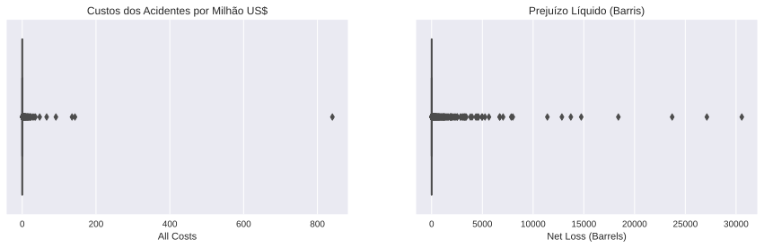

Inferência Estatística
Procedimento que objetiva produzir uma proposição probabilísitca sobre um modelo estatístico.
Modelo Estatístico
Identificar variáveis aleatórias de interesse, especificar uma distribuição conjunta (ou família), parâmetros relevantes e uma especificação para uma distribuição para os parâmetros desconhecidos (baysianos adoram essa parte, )
Espaço dos Parâmetros
Uma característica ou uma combinação de características para determinar uma distribuição conjunta para as variáveis aleatórias forma o parâmetro, que pertence a um espaço denominado .
Estatística
Função das variáveis aleatórias observáveis
Problemas estudados
- Predição: Baseado na época do ano que estamos, fatores climatológicos dos últimos dias, entre outros fatores, qual a probabilidade de chuva amanhã?
- Problemas de decisão estatística: É relacionado ao risco e teste de hipóteses. Resposta considerável
- Desenho de experimentos: um psicólogo quer inferir quão avesso ao risco é uma determinada população. Ele pode determinar, desenhar o experimento para isso.
Inferência Estatística com Python
import numpy as np
import pandas as pd
from scipy.stats import poisson
import matplotlib.pyplot as plt
import seaborn as sns
sns.set()Importando os Dados
Este banco de dados inclui um registro para cada vazamento ou derramamento de oleoduto relatado à Administração de Segurança de Dutos e Materiais Perigosos desde 2010. Esses registros incluem a data e hora do incidente, operador e oleoduto, causa do incidente, tipo de líquido perigoso e quantidade perdida, ferimentos e fatalidades e custos associados.
oil_accident_df = pd.read_csv('../data/oil_pipeline.csv')
oil_accident_df.sample()| Report Number | Supplemental Number | Accident Year | Accident Date/Time | Operator ID | Operator Name | Pipeline/Facility Name | Pipeline Location | Pipeline Type | Liquid Type | ... | Other Fatalities | Public Fatalities | All Fatalities | Property Damage Costs | Lost Commodity Costs | Public/Private Property Damage Costs | Emergency Response Costs | Environmental Remediation Costs | Other Costs | All Costs | |
|---|---|---|---|---|---|---|---|---|---|---|---|---|---|---|---|---|---|---|---|---|---|
| 871 | 20120202 | 17135 | 2012 | 6/15/2012 3:50 PM | 31476 | ROSE ROCK MIDSTREAM L.P. | BURKETT DISCHARGE | ONSHORE | UNDERGROUND | CRUDE OIL | ... | NaN | NaN | NaN | 6020.0 | 200.0 | 2500.0 | 10500.0 | 8500.0 | 16000.0 | 43720 |
1 rows × 48 columns
cols_of_interest = ['Accident Date/Time','Accident State','Pipeline Location',
'Liquid Type','Net Loss (Barrels)','All Costs']
data = oil_accident_df[cols_of_interest]
data['All Costs'] = data['All Costs'] / 1000000 # unidade em milhão.
data.sample()/home/lucasmoschen/anaconda3/lib/python3.7/site-packages/ipykernel_launcher.py:4: SettingWithCopyWarning:
A value is trying to be set on a copy of a slice from a DataFrame.
Try using .loc[row_indexer,col_indexer] = value instead
See the caveats in the documentation: https://pandas.pydata.org/pandas-docs/stable/user_guide/indexing.html#returning-a-view-versus-a-copy
after removing the cwd from sys.path.
| Accident Date/Time | Accident State | Pipeline Location | Liquid Type | Net Loss (Barrels) | All Costs | |
|---|---|---|---|---|---|---|
| 263 | 10/11/2010 4:10 PM | NJ | ONSHORE | REFINED AND/OR PETROLEUM PRODUCT (NON-HVL), LI... | 0.0 | 0.0 |
Vamos entender um pouco como esta informação esta organizada.
data.describe()| Net Loss (Barrels) | All Costs | |
|---|---|---|
| count | 2795.000000 | 2795.000000 |
| mean | 132.194050 | 0.834033 |
| std | 1185.019252 | 16.578298 |
| min | 0.000000 | 0.000000 |
| 25% | 0.000000 | 0.005040 |
| 50% | 0.000000 | 0.023129 |
| 75% | 2.000000 | 0.117232 |
| max | 30565.000000 | 840.526118 |
Vamos analisar os dados utilizando leis da probabilidade para aprender sobre a população. Veja que não temos a informação completa, apenas a partir de 2010.
fig, ax = plt.subplots(1,2,figsize = (15,4))
sns.boxplot(data['All Costs'], data=data, ax = ax[0])
ax[0].set_title('Custos dos Acidentes por Milhão US$')
sns.boxplot(data['Net Loss (Barrels)'], data=data, ax = ax[1])
ax[1].set_title('Prejuízo Líquido (Barris)')
plt.show()
Mas esse não era para ser um boxplot? Cade a caixa? Isso indica que valores grandes nos dois dados são muito maiores relativamente aos outros dados. Poderíamos prever o custo de um acidente usando a mediana dos valores? É de fato um modelo, mas nesse caso, parece ser ruim dado os valores grandes.
O que são esses valores grandes, afinal? Em alguns casos, podem realmente apresentar erros, mas nesse caso fica difícil de afirmar.
Bom. Podemos, dados esses problemas, trabalhar com outra variável disponível: o tempo do acidente. Conhecemos uma família de distribuições de probabilidade que modela frequência de acidentes em um intervalo de tempo?
Distribuição de Poisson: probabilidade de uma série de eventos ocorrer num certo período de tempo se estes eventos ocorrem independentemente de quando ocorreu o último evento.
De forma geral, podemos dizer que isso é verdade para acidentes de óleo. Assim, temos uma variável aleatória de interesser , que indica o número de acidentes, já temos uma distribuição para essa variável (Poisson) e já temos o parâmetro desconhecido.
data['Accident Date/Time'] = pd.to_datetime(data['Accident Date/Time'])
totaltimespan = np.max(data['Accident Date/Time']) - np.min(data['Accident Date/Time'])
totaltime_hour = (totaltimespan.days*24 + totaltimespan.seconds/(3600))
totaltime_month = (totaltimespan.days + totaltimespan.seconds/(3600*24)) *12/365
lmda_h = len(data) / totaltime_hour
lmda_m = len(data) / totaltime_month
print('Número estimado de acidentes por hora: {}'.format(lmda_h))
print('Número estimado de acidentes por mês {}'.format(lmda_m))Número estimado de acidentes por hora: 0.04540255169379675
Número estimado de acidentes por mês 33.14386273647162
/home/lucasmoschen/anaconda3/lib/python3.7/site-packages/ipykernel_launcher.py:1: SettingWithCopyWarning:
A value is trying to be set on a copy of a slice from a DataFrame.
Try using .loc[row_indexer,col_indexer] = value instead
See the caveats in the documentation: https://pandas.pydata.org/pandas-docs/stable/user_guide/indexing.html#returning-a-view-versus-a-copy
"""Entry point for launching an IPython kernel.
Poderíamos ter procedimentos para estimar , mas por hora, vamos tomar ele como a média das observações. Pela Lei dos Grandes Números, sabemos que a média da Poisson é e a média amostral tende para ela.
lamda = 33X = poisson(lamda)
I = np.arange(0,60,1) #intervalo(0,60), passo = 1
samples_poisson = np.sort(np.random.poisson(lamda,10000))
Y = X.cdf(samples_poisson) #função de densidade acumulada
fig, ax = plt.subplots(1,2,figsize = (20,8))
ax[0].scatter(I,X.pmf(I) , color = 'purple')
ax[0].set_xlabel('Número de Acidentes por mês (n)')
ax[0].set_ylabel('P(X <= n)')
ax[0].set_title('Função de Massa de Probabilidade')
ax[1].scatter(samples_poisson, Y, color = 'purple')
ax[1].hlines(0.5, xmin = min(samples_poisson), xmax = max(samples_poisson),
linestyle = '--', color = 'black')
ax[1].set_xlabel('Número de acidentes por mês (n)')
ax[1].set_ylabel('P(X <= n)')
ax[1].set_title('Função de Distribuição Acumulada')
plt.show()
A partir de nosso modelo, já podemos fazer acertações probabilística!
real_data = np.array(data['Accident Date/Time'].apply(lambda x: (x.year, x.month)))
accidents_count = {2010 + i: {m: 0 for m in range(1,13)} for i in range(8)}
for info in real_data:
accidents_count[info[0]][info[1]] += 1
distribution = [accidents_count[y][m] for y in accidents_count.keys() for m in accidents_count[y].keys()]
distribution = distribution[:-12] #Tirando 2 observações de 2017
fig, ax = plt.subplots()
sns.distplot(distribution, bins = 15, ax = ax, label = 'Original data', kde = False, norm_hist = True)
ax.scatter(I,X.pmf(I) , color = 'purple', label = 'Nosso modelo')
ax.legend()
ax.set_title('Comparando modelo com dados reais')
plt.show()